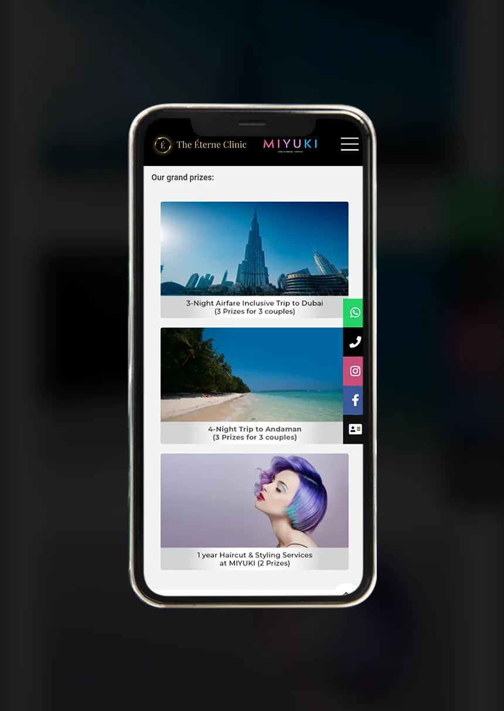
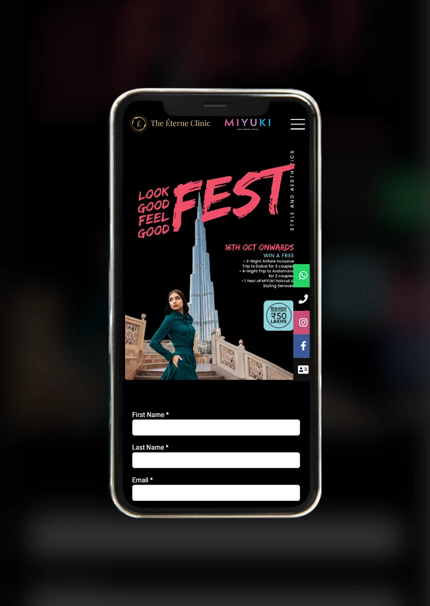
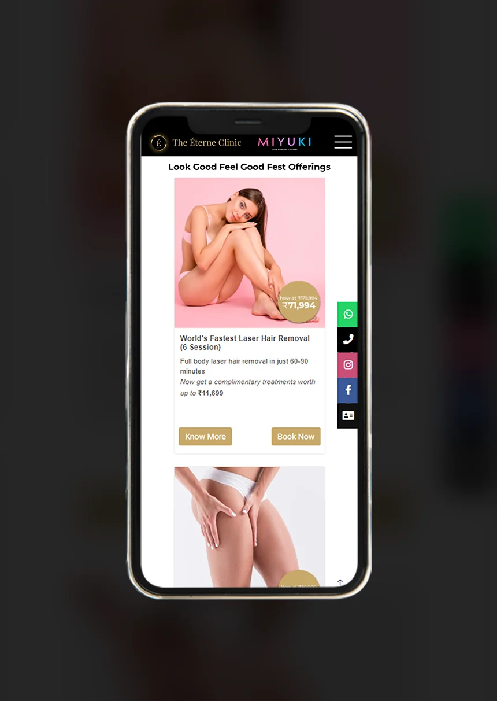

After a viral launch event, the next challenge The Éterne Clinic & MIYUKI faced was how to keep the sales momentum going. They needed an innovative marketing campaign that highlighted their services, expanded their reach, amplified their brand awareness & resonated with their respective target audience and encouraged them to book appointments & buy services.
5W&N's solution was the 'Look Good, Feel Good Fest', a campaign meticulously designed to create an immersive experience for The Éterne Clinic's & MIYUKI’s clientele, composed predominantly of local HNI community, expats, homemakers and so on, in order to attract new audiences. Our goal was to elevate the typical customer journey into a celebratory and empowering event, focusing on the transformation that comes with their services.
The primary objective of the 'Look Good, Feel Good Fest' was to boost sales and encourage cross-promotion between the brands by connecting with customers on a more personal and emotional level. We aimed to create an environment where clients not only availed themselves of their services but also felt part of a larger, celebratory journey towards self-improvement and confidence.
To add excitement and boost engagement, apart from great deals on service packages, the campaign offered prize raffles with assured prizes and rewards like free services and trips to Dubai, Andaman & Nicobar Islands, and service-based rewards worth up to 35 Lakhs. These incentives were not just about attracting clientele but were designed to make them feel valued and part of the Éterne & MIYUKI family.

In the fiercely competitive market and the highly geo-local nature of the services the brands offer, we needed an ace up our sleeve. We identified & collaborated with local women of influence, who echoed the ethos of Éterne & Miyuki. This wasn't just networking; it was a smart, word-of-mouth crusade. These influential mavens didn't just mingle; they helped us tap into the crème de la crème of HNI circles in close proximity to the salon & clinic. Talk about hitting the jackpot, both in terms of engagement and cost-effectiveness!
We showcased these women in action, participating in the fest & sharing their genuine experiences. Their stories, splashed across social media, weren't just posts; they were open invitations to their followers, urging them to be part of the fest, turning our presence into a buzz-worthy spectacle.
An integral part of our strategy was to capture authentic customer experiences. We shot content with prize winners, showcasing their journey with The Éterne Clinic & MIYUKI. These real-life stories were powerful testimonials of the effectiveness of services and the emotional impact of the campaign.
We also used WhatsApp as a direct marketing tool. We sent personalised messages to potential and existing customers, updating them about the fest, exclusive offers, and real-time updates. This approach allowed us to maintain a continuous, personal connection with our audience.

To make our marketing efforts more sniper-precise, we utilised social media marketing (SMM) programmatic marketing and major A/B testing. These were tailored to individual preferences and behaviours, making them more effective in engaging potential clients. These provided valuable data and insights into customer preferences, which will inform future marketing strategies.
The culmination of our efforts was a viral marketing campaign. Every post, every shout-out was engineered to be shareable, sparking conversations and creating a buzz across the digital landscape & beyond the immediate customer base of both brands
We observed a significant uptick in sales by 110% and client engagement during and after the campaign. It brought in new customers and strengthened loyalty among existing ones.

By blending innovative marketing techniques with an innate understanding of what makes the target audience for the brands tick, we were able to strategise & execute a campaign that didn’t just meet the goal; but knocked them out of the park.